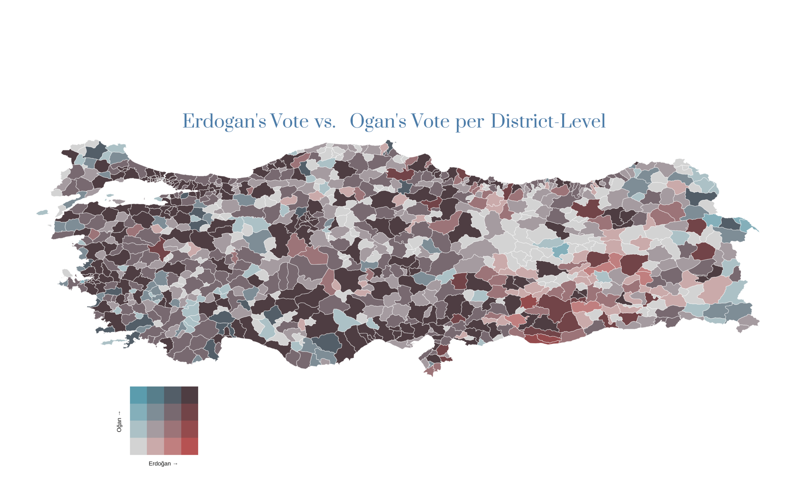

Bivariate maps are particularly useful when you want to demonstrate the relationship between two specific variables on a map. I have always admired the concept of creating such maps. However, initially, it seemed like a daunting task, especially after reading Timo Grossenbacher’s blog post on regional income inequality in Switzerland.
Please don’t misunderstand me, as I believe that this blog post was well-documented and elegantly explained each step in creating such maps. However, being somewhat impatient at sometimes, I was mainly interested in obtaining the final output without paying much attention to other points like data wrangling or etc. (Although I will have to do some data wrangling later hahah) It seems that Grossenbacher shared the same sentiment, as he, along with Christopher Prener and Angelo Zehr, developed a package called biscale, which simplifies the entire process.
Without delving into further details, let’s begin with the initial steps to create a bivariate map for the first round of the 2023 Turkish Election data.
As done in previous posts, let’s begin by loading the packages that we will be using throughout this process.
options(scipen=999) # to prevent scientific notation
library(readxl) # to read excel files
library(tidyverse) # for data analysis purposes and visulization -> tidyverse mainly contains ggplot2 and dplyr
library(biscale)
library(showtext) # in case we might want to customize the fonts further, I am not sure about that at this point :)
library(ggtext) # to make the final map better looking, particularly to customize the title, subtitle, legends etc.
library(cowplot) # to place the legend and the map elegantly
library(sf) # to read geosparial data into RNow, let’s read the Turkish election data and the relevant spatial data into R.
Code
# Be careful about where your R working directory is and where your downloaded data is located. If your data is not in the same place where your R working directory is, then R cannot read the data.
election_2023 <- read_excel("/Users/muhammetozkaraca/Desktop/Seçim_2023_Analizi/seçim_2023.xlsx")
districts_geo_data <- read_sf("/Users/muhammetozkaraca/Desktop/Seçim_2023_Analizi/turkey_administrativelevels0_1_2/tur_polbna_adm2.shp")
str(election_2023)Output
## tibble [974 × 9] (S3: tbl_df/tbl/data.frame)
## $ İl : chr [1:974] "ADANA" "ADANA" "ADANA" "ADANA" ...
## $ İlçe : chr [1:974] "ALADAĞ" "CEYHAN" "ÇUKUROVA" "FEKE" ...
## $ Sandık Sayısı : chr [1:974] "51" "357" "790" "60" ...
## $ Seçmen Sayısı : num [1:974] 12330 112582 287869 12788 20211 ...
## $ toplam_geçerli_oy : num [1:974] 10872 96851 256488 10661 17719 ...
## $ Recep Tayyip Erdoğan: num [1:974] 6679 44001 80498 6878 11636 ...
## $ Kemal Kılıçdaroğlu : num [1:974] 3607 48273 161358 3092 5165 ...
## $ Sinan Oğan : num [1:974] 502 4132 14021 588 825 ...
## $ Muharrem İnce : num [1:974] 84 445 611 103 93 93 33 431 53 60 ...As can be seen from the output, we do have 9 different variables in the 2023 election dataset. They are;
Now, with the bivariate map, we can explore various relationships between different variables present in the election data. For instance, we can examine the votes obtained by biscale versus Sinan Oğan in the given district. However, considering the recent public debate in Turkey, particularly regarding whether Sinan Oğan’s voters would support Recep Tayyip Erdoğan if Oğan announces his support for Erdoğan, we will create a bivariate map at the district level to compare Oğan’s performance relative to Erdoğan’s in the first round of elections.
To accomplish this, we will merge two datasets: the election data and the spatial data containing information on the geographical boundaries of the districts. However, we may encounter a challenge at this point. Due to the distinct characters used in the Turkish language, the district names in the election data might not correspond to the names in the geospatial data1. To address this, we will employ a workaround. We will create a new variable called id in both datasets by concatenating the name and district name information. Then, we will use a short code snippet to convert the Turkish characters to English. This approach will help us overcome the issue swiftly. Let’s proceed with these steps:
Code
election_2023 <- election_2023 %>%
mutate(İlçe = gsub(" MERKEZ", "", İlçe),
İlçe = case_when(İlçe == 45065 ~ "19 MAYIS",
TRUE ~ İlçe),
id = paste(İl, İlçe)) %>%
slice(1:973)
districts_geo_data <- districts_geo_data %>%
mutate(id = paste(adm1_en, adm2_en))
election_2023[] <- lapply(election_2023,
function(x) str_replace_all(x, c("İ"="I", "Ö"="O", "Ğ" = "G", "Ö" = "O", "Ş" = "S",
"Ü" = "U", "Ç"="C")))
setdiff(election_2023$id, districts_geo_data$id)Output
## character(0)Now, as can be seen from the code output, the two id columns across datasets correspond to each other totally. Now, let’s merge them.
data <- election_2023 %>%
left_join(districts_geo_data, by = "id") %>%
mutate(`Sandık Sayısı` = as.numeric(`Sandık Sayısı`),
`Seçmen Sayısı` = as.numeric( `Seçmen Sayısı`),
toplam_geçerli_oy = as.numeric(toplam_geçerli_oy),
`Recep Tayyip Erdoğan` = as.numeric(`Recep Tayyip Erdoğan`),
`Kemal Kılıçdaroğlu` = as.numeric(`Kemal Kılıçdaroğlu`),
`Sinan Oğan` = as.numeric(`Sinan Oğan`),
`Muharrem İnce` = as.numeric(`Muharrem İnce`)) %>%
group_by(İlçe) %>%
dplyr::select(İl, İlçe, `Recep Tayyip Erdoğan`, `Sinan Oğan`, geometry) So, right now we have all the information we need to make map by keeping them in data, the votes Erdoğan and Oğan obtained per district along with the corresponding district’s boundaries.
biscale package and ggplot2What comes next is to take advantage of the biscale package to make the initial steps of the bivariate map with the following code chunk;
Code
bivariate_map <- bi_class(data, x = `Recep Tayyip Erdoğan`, y = `Sinan Oğan`, style = "quantile", dim = 4)Output
## gropd_df [973 × 6] (S3: grouped_df/tbl_df/tbl/data.frame)
## $ İl : chr [1:973] "ADANA" "ADANA" "ADANA" "ADANA" ...
## $ İlçe : chr [1:973] "ALADAG" "CEYHAN" "CUKUROVA" "FEKE" ...
## $ Recep Tayyip Erdoğan: num [1:973] 6679 44001 80498 6878 11636 ...
## $ Sinan Oğan : num [1:973] 502 4132 14021 588 825 ...
## $ geometry :sfc_MULTIPOLYGON of length 973; first list element: List of 1
## ..$ :List of 1
## .. ..$ : num [1:1330, 1:2] 35.2 35.2 35.2 35.2 35.2 ...
## ..- attr(*, "class")= chr [1:3] "XY" "MULTIPOLYGON" "sfg"
## $ bi_class : chr [1:973] "2-2" "4-4" "4-4" "2-2" ...
## - attr(*, "groups")= tibble [948 × 2] (S3: tbl_df/tbl/data.frame)
## ..$ İlçe : chr [1:948] "19 MAYIS" "ABANA" "ACIGOL" "ACIPAYAM" ...
## ..$ .rows: list<int> [1:948]
## .. ..$ : int 737
## .. ..$ : int 499
## .. ..$ : int 676
## .. ..$ : int 246
## .. ..$ : int 156
## .. ..$ : int 422
## .. ..$ : int 721
## .. ..$ : int 164
## .. ..$ : int 16
## .. ..$ : int 636
## .. ..$ : int 25
## .. ..$ : int 890
## .. ..$ : int 291
## .. ..$ : int 180
## .. ..$ : int 500
## .. ..$ : int 43
## .. ..$ : int 562
## .. ..$ : int 165
## .. ..$ : int 619
## .. ..$ : int 810
## .. ..$ : int 606
## .. ..$ : int 836
## .. ..$ : int 543
## .. ..$ : int 966
## .. ..$ : int 868
## .. ..$ : int 409
## .. ..$ : int 620
## .. ..$ : int 770
## .. ..$ : int 519
## .. ..$ : int 690
## .. ..$ : int 563
## .. ..$ : int 544
## .. ..$ : int 891
## .. ..$ : int 564
## .. ..$ : int 83
## .. ..$ : int [1:2] 84 396
## .. ..$ : int 491
## .. ..$ : int 722
## .. ..$ : int 58
## .. ..$ : int 232
## .. ..$ : int 292
## .. ..$ : int 738
## .. ..$ : int 1
## .. ..$ : int 85
## .. ..$ : int 882
## .. ..$ : int 621
## .. ..$ : int 461
## .. ..$ : int 798
## .. ..$ : int 331
## .. ..$ : int 128
## .. ..$ : int 59
## .. ..$ : int 565
## .. ..$ : int 691
## .. ..$ : int 943
## .. ..$ : int 381
## .. ..$ : int 593
## .. ..$ : int [1:2] 181 771
## .. ..$ : int 684
## .. ..$ : int 354
## .. ..$ : int 929
## .. ..$ : int 51
## .. ..$ : int 410
## .. ..$ : int 637
## .. ..$ : int 382
## .. ..$ : int 345
## .. ..$ : int 501
## .. ..$ : int 811
## .. ..$ : int 939
## .. ..$ : int 607
## .. ..$ : int 933
## .. ..$ : int 102
## .. ..$ : int 709
## .. ..$ : int 608
## .. ..$ : int 103
## .. ..$ : int 293
## .. ..$ : int 723
## .. ..$ : int 944
## .. ..$ : int 423
## .. ..$ : int 492
## .. ..$ : int 812
## .. ..$ : int 383
## .. ..$ : int 799
## .. ..$ : int 647
## .. ..$ : int 104
## .. ..$ : int 739
## .. ..$ : int 311
## .. ..$ : int 594
## .. ..$ : int 397
## .. ..$ : int 740
## .. ..$ : int 424
## .. ..$ : int 220
## .. ..$ : int 677
## .. ..$ : int 425
## .. ..$ : int 761
## .. ..$ : int 60
## .. ..$ : int 692
## .. ..$ : int [1:2] 411 869
## .. ..$ : int 898
## .. ..$ : int 901
## .. .. [list output truncated]
## .. ..@ ptype: int(0)
## ..- attr(*, ".drop")= logi TRUEAs observed in the code above, we have introduced a new variable named bi_class using the bi_class() function from the biscale package. The purpose of this variable is to determine the position of the associated value within the color grid that will be used in the bivariate map2.
Please note that we have placed Recep Tayyip Erdoğan on the x-axis and Sinan Oğan on the y-axis by setting the dimension (dim) parameter to 4. This signifies that the color grid in the bivariate map will have a size of 4x4.
Lastly, the style argument has been set to quantile in order to enhance the visibility of differences. Although there are other options available such as equal, fisher, and jenks, quantile is chosen here based on the package description, which can also be found at here
The default “quantile” approach will create relatively equal “buckets” of data for mapping, with a break created at the median (50th percentile) for a two-by-two map or at the 33rd and 66th percentiles for a three-by-three map. For a four-by-four map, breaks are created at the 25th, 50th (median), and 75th percentiles.
Now, let’s make the plot finally. Note that we will make the map initially, then make a corresponding legend and finally put them together by taking advantage of draw_plot() function from the cowplot package.
Code
font_add_google("Prata", family = "title", regular.wt = 400)
showtext_auto()
map <- ggplot() +
geom_sf(data = bivariate_map, mapping = aes(fill = bi_class, geometry = geometry),
color = "white", size = 0.1, show.legend = FALSE) +
bi_scale_fill(pal = "GrPink2", dim = 4) +
labs(title = "Erdogan's Vote vs. Ogan's Vote per District Level") +
theme_void() +
theme(plot.title = element_markdown(family = "title", size = 24, color = "#4A7BA8FF", hjust = 0.5))
legend <- bi_legend(pal = "GrPink2",
dim = 4,
xlab = "Higher Erdoğan",
ylab = "Higher Oğan ",
size = 8)
# combine map with legend
finalPlot <- ggdraw(map) +
draw_plot(legend, 0.1, .05, 0.2, 0.2)Output 
For instance, there is ‘Ğ’ letter in Turkish, which is not used in other languages↩︎
If you do not understand what is meant here, do not worry. Most probably the problem is not related to you but me. I could not find any better phrase to describe the issue here tbh. Sorry for that, but please check that again when the final output is made since I think it will make sense at that time.↩︎